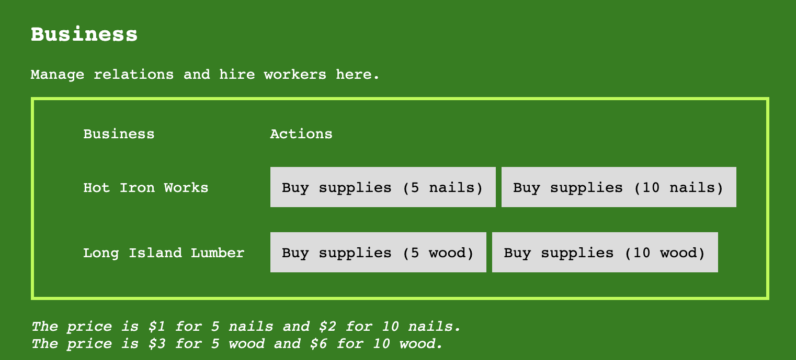
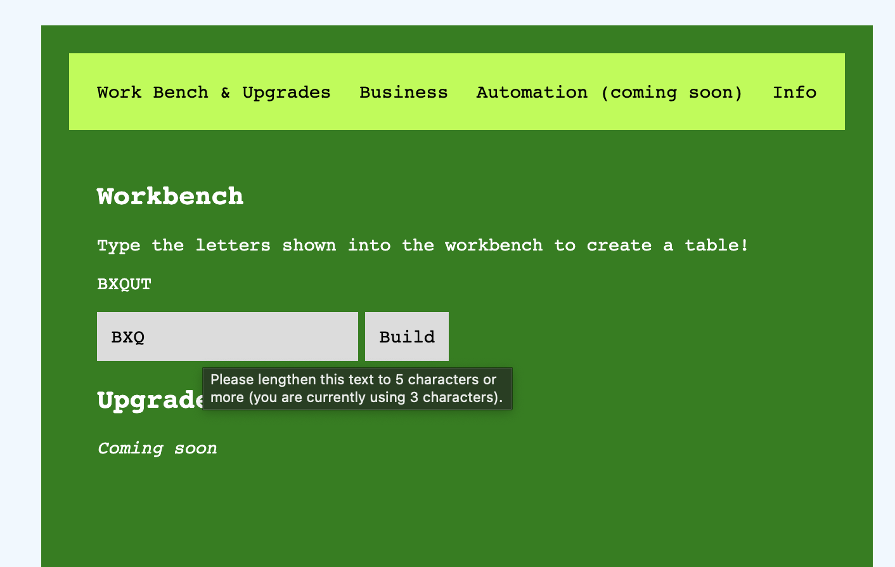

Information:
Welcome! This help page is being edited constantly, so make sure to come back every so often.
Getting Started
The basic concepts of this game are centered around the workbench. Simply type the letters into the input to make a table. Replenish your stock to built tables in the business section. Your beginner's todo list is:
- Make your first table by typing the letters into the input.
- Make another one.
- Sell your tables in the business tab.
- Go to the business tab and order some supplies from the companies that sell nails and wood.
 The business tab UI.
 The table building UI.
Basics:
In this game, buy materials in the "business" section. Use the materials to make tables. Use upgrades to make sure tables are sold. Tables can be attempted to be sold in the business section. There is a default sale chance of 40%. Don't worry, you can repeat the process multiple times at the cost of $1 each time.
Credits
Thanks to EF0601, the main director and coder. Thanks to Guuuuest0001 for coding other parts and coming up with the idea.